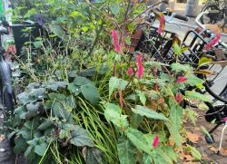

Tips & Tricks
Wilt u de Spuistraat helpen? Moet u eerst weten wat voor planten u gaat groeien.
Wat voor planten zijn het best om te groeien? Hoe verzorg je deze planten?
Scroll verder om meer te weten!
Pimpernel - Sanguisorba Hakusanensis 'Lilac Squirrel'
Sanguisorba hakusensis 'Lilac Squirel' bloeit met lilaroze hangende bloemen in de periode juli-september. Zowel de bloemen als het grijsgroene blad van Sanguisorba hakusensis 'Lilac Squirel' heeft een hoge sierwaarde en maken het een populair borderplant.
 Pimpernel opvoedingVingerhoedskruid - Digitalis Purpurea 'Lady's Glove'
In veel tuinen is vingerhoedskruid (Digitalis) een erg populaire plant, vanwege de sierlijke torens met hun klokvormige bloemen. Het is een prachtige plant voor een cottagetuin en bovendien zeer aantrekkelijk voor bestuivende insecten, zoals hommels.
Vingerhoedskruid opvoedingGeranium - Ooievaarsbek
Geraniums, ook wel ooievaarsbek genoemd, zijn sterke, makkelijke planten. Er zijn veel soorten die uitstekend dienen als bodembedekker, waardoor onkruid minder kans heeft. Ook kennen ze een grote verscheidenheid in bloemkleur, variërend van wit, roze, licht/donkerrood, donkerpaars, licht- en donkerblauw.
Geranium opvoeding